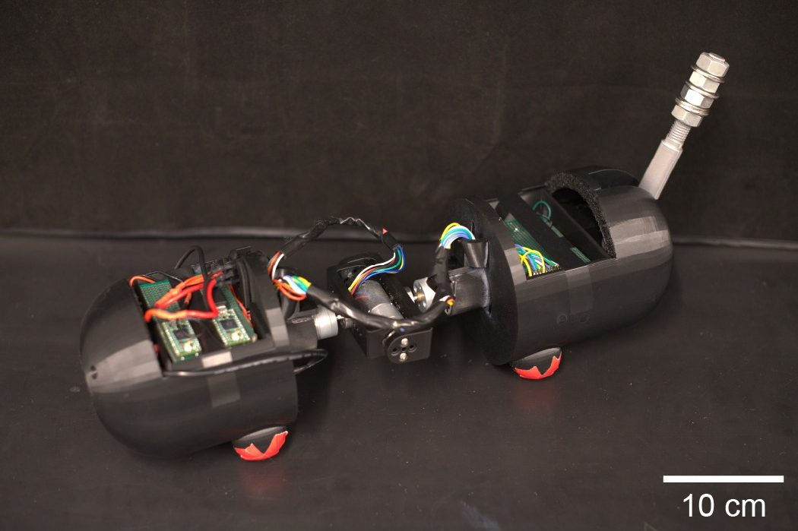
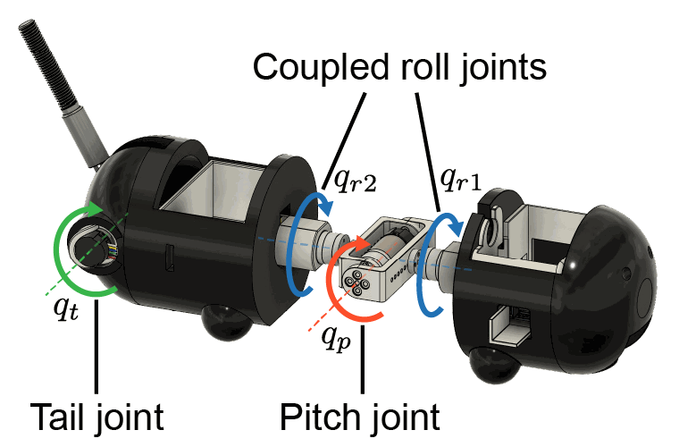
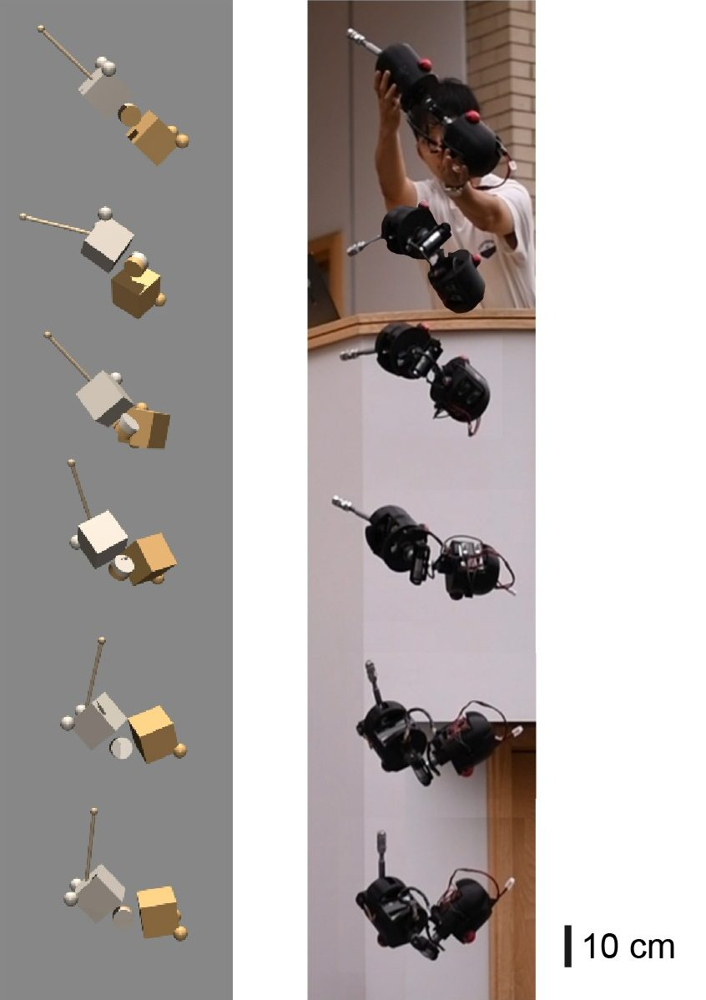

Aerial self-righting · Under review
A multi-strategy aerial self-righting robot for evaluating the contribution of an actuated tail across fall conditions
A cat-inspired robot with an actuated spine and tail rights itself in free fall, using a policy trained only in simulation and run onboard. Averaged over its drops, it turned feet-down within 1 m of falling with the tail and within 2 m without it. The tail raised the whole-cat score, a 0–1 measure of righting (adjusted +0.157, p = 0.0016), clearly across roll releases and inconclusively across pitch releases.
Overview
Two ways to land on your feet, in one body
Cats right themselves in mid-air by bending and twisting a flexible body. Lizards do it by swinging their tails. MeowMentum combines both: two body segments joined by an actuated two-degree-of-freedom spine, plus a one-degree-of-freedom actuated tail.
The robot detects its own free fall and rights itself in closed loop from onboard sensing, with a policy trained only in simulation and deployed without tuning on hardware. Because the tail can be removed, the same platform shows what the tail adds: we dropped the robot with and without it from a range of roll and pitch attitudes and scored how upright and how straight it was in the air.
Free fall after which the tailed robot's mean body tilt, averaged over its drops, was below 45°, the paper's feet-down threshold. Without the tail the average got there within 2 m.
Gain in whole-cat score from the tail, adjusted for release, date, initial posture and spin (95% CI 0.062–0.252, p = 0.0016). The score runs from 0 to 1; raw means went from 0.69 to 0.80.
Scored hand-released hardware drops from six release attitudes: 35 with the tail and 37 without.
Hardware drops
Same release, with and without the tail
Each drop is released by hand from about 2.8 m, at an orientation set using the robot's own IMU readout, and caught in a blanket. The robot detects free fall when its measured acceleration drops below 3.5 m/s² and has about 0.8 s, until it reaches the blanket, to right itself.
Slow motion at an uncalibrated rate, and some clips were released from lower than others, so compare postures rather than timing; the replay below is timed from the robot's own log. Both clips start just before release and loop together.
Robot
A spine that bends and twists, and a tail that swings
Two cylindrical body segments are joined by a 2-DoF spine. A pitch joint bends the body. Two roll joints, one at each segment, are driven by a single coupled command, so the front and rear sections turn in the same sense about their own long axes. Once the spine is bent those axes are no longer parallel, and the coordinated roll reorients the whole body without an external moment. This follows the falling-cat model of Kane and Scher.
The tail is a second, lizard-like strategy. Accelerating it about the pitch axis makes the rest of the robot rotate the other way to conserve angular momentum. It also changes the robot's inertia, so the same spine motion produces a different body rotation with and without the tail.


- Mass
- 1.86 kg, or 1.71 kg without the tail
- Length
- 58.7 cm, or 44.7 cm without the tail
- Spine
- Pitch (Pololu 4844) and coupled roll (2 × Pololu 4862)
- Tail
- 1-DoF pitch (Pololu 4862), adjustable tip mass
- Compute
- Raspberry Pi runs the policy; two Teensy boards run the motor loops
- Sensing
- BNO085 IMU in the front body, encoders on every joint
- Drivers
- VNH5019 motor drivers in the front and rear bodies
- Power
- 11.1 V 3S LiPo, 2200 mAh
Method
Trained in simulation, deployed zero-shot
Because the mass matrix and momentum coupling change with every joint configuration, the righting dynamics are three-dimensional and configuration dependent. Rather than prescribing a fixed manoeuvre, we learn a closed-loop controller for each morphology through an identical pipeline.
-
Simulate
A simplified MuJoCo model of each morphology (box-shaped segments, a point-mass tail) with the robot's joint layout and approximate segment masses. Each episode is a one-second fall from a random attitude and spin, with the physics randomised per episode.
1 kHz physics · 50 Hz policy -
Teacher
Soft Actor-Critic on a privileged, yaw-invariant state that includes the randomised physical parameters. A temporal smoothness term in the actor loss keeps the targets trackable.
73-D state · MLP 2 × 256 -
Student
DAgger distils the teacher into a policy that sees only what the robot measures: gravity from the front IMU, four joint angles, its previous action and the step count, with noise and bias injected into the readings.
11-D observation · 50 × 2,000 steps -
Deploy
The student runs as ONNX on the Raspberry Pi, which low-pass filters its roll, pitch and tail targets and sends them to PD loops on two Teensy boards. Detecting free fall starts one second of control: 50 policy steps, the length of a simulated episode.
50 Hz policy · 1 kHz PD

Why internal motion turns the body
In free fall gravity acts through the centre of mass, so, neglecting air drag, the centroidal angular momentum is conserved. Expressed in the front body, its angular velocity is set by the momentum at release and by how fast the joints move:
The locked inertia I_L and the momentum-coupling matrix A both depend on the joint configuration, and the tail changes both. The controller learns to exploit this coupling.
Reward
Each step rewards the uprightness of both segments, u_i = 1 − φ_i/π, where φ_i is the angle between a segment's up vector and the world's. A product term is largest when both are upright at once, and a small penalty on body angular velocity discourages unnecessary manoeuvring:
Domain randomisation, drawn per episode
| Parameter | Type | Range |
|---|---|---|
| Body mass | multiplier | 0.8 – 1.2 |
| Centre of mass | offset | ±0.04 m |
| Inertia tensor | multiplier | 0.8 – 1.2 |
| Joint damping | multiplier | 0.7 – 1.3 |
| Armature | multiplier | 0.4 – 2.5 |
| Friction loss | multiplier | 0.7 – 1.3 |
| Torque limit | multiplier | 0.8 – 1.2 |
| PD gains | multiplier | 0.8 – 1.2 |
| Action delay | steps | 0, 1 or 2 |
Telemetry replay
Replay any drop from the robot's own sensors
During every drop the robot logged its front-body orientation from the IMU and all four joint encoders at 50 Hz. That is enough to rebuild the full pose, because the rear segment follows from the joint chain. Pick a release and a drop, drag to orbit, or switch to a simulated rollout of the same configuration.
Line: this drop, up to impact. Band: hardware mean ± SD for this release, first 0.64 s. Dashed: 2.5 m scoring point.
Hardware log: front-body orientation from the IMU and four joint encoders at 50 Hz; the rear segment is rebuilt from the joint chain. Heading is not observable from gravity, so each replay is turned to start facing the same way. Each replay ends at impact, the peak deceleration in the blanket, 0.70–0.85 s after free-fall detection; the samples logged after it are not shown. Distance is the ballistic estimate ½gt² from free-fall detection, so near impact it can exceed the nominal 2.8 m drop. Scores are taken at 2.5 m of fall, before impact.
Results
On average feet down within a metre with the tail, and straighter
The roll sweep released the robot at 45°, 90° and 180° of roll with zero pitch. The pitch sweep held roll at 180° and pitched the nose down by 0°, 15°, 30° and 45°. From every release, both configurations turned rapidly toward feet-down, and the mean tilt changed little after that. Recovery was slowest from the 180° roll releases: without the tail, the roll 180°, pitch 0° drops still averaged about 54° at 2 m, above the 45° feet-down threshold.
Mean body tilt (the summed absolute roll and pitch of the front and rear segments, averaged over the two) against time since free-fall detection. Lines show the mean and bands ±1 SD over 6–7 drops per release; grey guides mark 1 m and 2 m of free fall. Hover or tap a legend entry to isolate a release.
Pooled over all releases (36 drops with the tail and 37 without, including one short drop excluded from scoring), the mean body tilt after 1 m of free fall was 42.3 ± 22.5° with the tail and 51.2 ± 24.7° without it. After 2 m it was 29.6 ± 14.2° and 35.6 ± 18.2° (mean ± SD across drops).
Whole-cat score
Righting needs both an upright body and an aligned one; a robot whose front half lands upright while its rear half is twisted has not recovered. Each drop is therefore scored as the product of two terms in [0, 1], so that neither can make up for the other:
Here S_upright scores the mean up-vector of the two segments against gravity, and θ is the rotation angle between the front and rear segments. Both are evaluated after 2.5 m of free fall. A score of one means the robot is fully upright and fully straight.
Whole-cat score per drop. Boxes show the median and interquartile range, whiskers extend to 1.5 × IQR, and points are individual drops (n = 5–7 per group). Select a point, or focus it and press Enter, to replay that drop.
| Analysis | No tail | With tail | Adjusted tail effect | 95% HC3 CI | HC3 p | Holm p | Blocked permutation p |
|---|---|---|---|---|---|---|---|
| All releases | 0.688 ± 0.155 (37) | 0.798 ± 0.090 (35) | +0.157 | [0.062, 0.252] | 0.0016 | – | 0.0008 |
| Roll sweep | 0.627 ± 0.140 (19) | 0.807 ± 0.086 (17) | +0.185 | [0.075, 0.296] | 0.0019 | 0.0056 | 0.0004 |
| Pitch sweep | 0.715 ± 0.164 (24) | 0.789 ± 0.092 (24) | +0.114 | [−0.057, 0.286] | 0.1841 | 0.3682 | 0.0958 |
Raw scores are mean ± sample SD, with the number of drops in brackets. The adjusted effect is the with-tail minus no-tail outcome after controlling for release condition, collection date, initial posture and initial angular speed, with heteroskedasticity-consistent (HC3) standard errors. The overall comparison is the primary analysis. The sweep values are Holm-adjusted within a family of three secondary tests: the two sweeps and a pitch-levelling test reported in the repository. The blocked permutation test shuffles tail labels within release-condition × date blocks.
Decomposing the score shows that the improvement came mainly from better alignment between the front and rear segments. With the tail, the robot less often ended up with one half upright while the body stayed bent or twisted. Its raw scores also varied less from drop to drop (SD 0.090 against 0.155), although this difference was not tested statistically.
Discussion
What the tail is worth
The spine alone already reorients the robot.
Averaged over all releases, both configurations were feet-down (mean body tilt below 45°) by 2 m of free fall, and the tailed robot already by 1 m. From the hardest release, roll 180° without the tail, the average stayed above 45° (about 54° at 2 m). Turning feet-down puts the compliant feet, rather than the electronics, toward the landing.
The tail's benefit was clearest across roll releases.
In the roll sweep the tail raised the adjusted whole-cat score by 0.185 (p = 0.0019, Holm 0.0056). In the pitch sweep, where every release was also at 180° roll, the estimate favoured the tail (+0.114) but its confidence interval included zero. The two sweeps were not compared directly.
A tail is a trade-off, not a requirement.
It adds 0.15 kg (8.8% of the no-tail mass), a degree of freedom and an actuator. Whether that is justified depends on the falls a robot expects. Tail length, mass and mass distribution are open design variables we have not yet optimised.
Limitations: the robot was released by hand, so its initial posture and spin varied between drops; the initial whole-cat score and angular speed were recorded and included as covariates. Tail and no-tail drops were not interleaved within a session, and for some releases they were flown on different days, so date and configuration are partly confounded. The whole-cat score was also defined after the drops were flown, so the p-values are best read as exploratory. Replaying the logs shows that 19 of the 37 no-tail drops, including every pitched one, were flown with the with-tail policy (the controller's default at the time); they are kept in the no-tail results, as in the submitted paper. We tested a single tail geometry.
Citation
BibTeX
@inproceedings{meowmentum,
title = {{MeowMentum}: A Multi-Strategy Aerial Self-Righting Robot
for Evaluating the Contribution of an Actuated Tail
Across Fall Conditions},
author = {Anonymous},
booktitle = {Under review},
year = {2026}
}